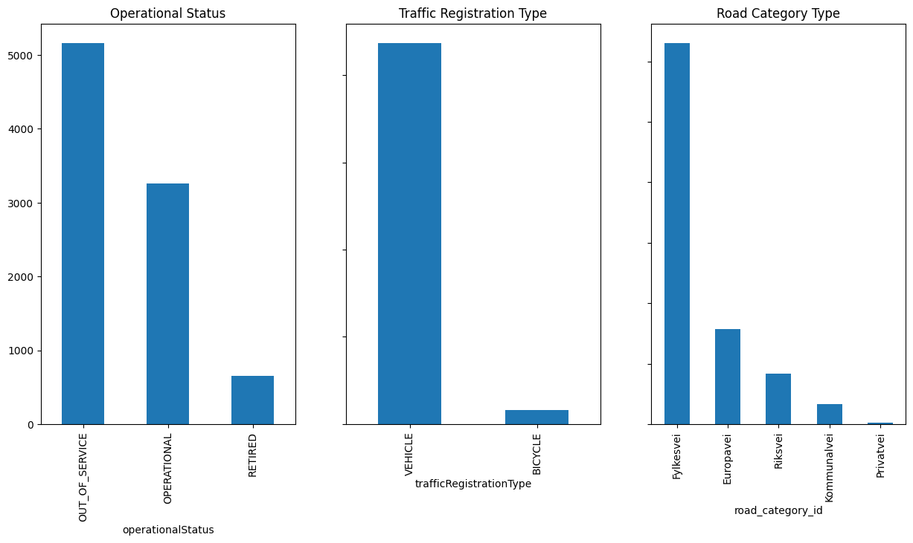
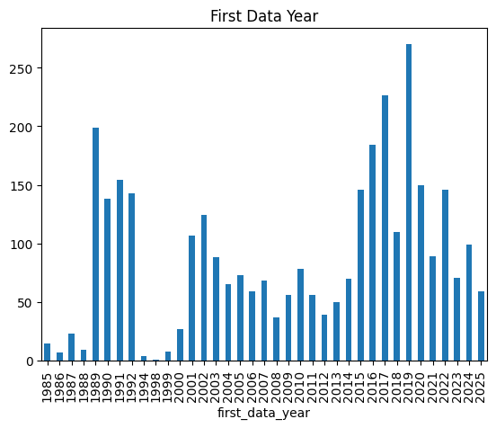
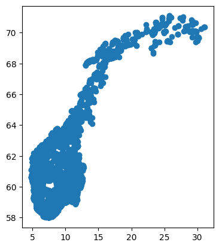

Code
import requests
import pandas as pd
import geopandas
import matplotlib.pyplot as pltData obtained from Statens Vegvesen1
import requests
import pandas as pd
import geopandas
import matplotlib.pyplot as pltroad_categories = {
'E': "Europavei", 'R' : "Riksvei", 'F': "Fylkesvei", 'K': "Kommunalvei", 'P': "Privatvei"
}
def get_sensors():
"""
Fetches traffic sensors data from the Atlas API and returns it as a GeoDataFrame.
"""
url = "https://trafikkdata-api.atlas.vegvesen.no"
headers = {
"content-type": "application/json"
}
query_template = """
{
trafficRegistrationPoints(searchQuery: {roadCategoryIds: [%s] }) {
id
name
trafficRegistrationType
commissions {
validFrom
validTo
lanes {
laneNumberAccordingToRoadLink
laneNumberAccordingToMetering
}
}
direction {
fromAccordingToRoadLink
fromAccordingToMetering
toAccordingToRoadLink
toAccordingToMetering
}
manualLabels {
validFrom
validTo
affectedLanes {
lane {
laneNumberAccordingToRoadLink
laneNumberAccordingToMetering
}
states
}
}
operationalStatus
registrationFrequency
dataTimeSpan {
firstData
firstDataWithQualityMetrics
latestData {
volumeByHour
volumeByDay
volumeAverageDailyByMonth
volumeAverageDailyBySeason
volumeAverageDailyByYear
}
}
location {
coordinates {
latLon {
lat
lon
}
}
}
}
}
"""
road_category_ids = road_categories.keys()
df_sensors_list = []
for road_category_id in road_category_ids:
# Use old style string formatting to not escape the curly braces in the query.
data = {
"query": query_template % road_category_id,
"variables": None
}
response = requests.post(url, headers=headers, json=data)
df_sensors_list.append((
pd.json_normalize(response.json()['data']['trafficRegistrationPoints'])
.assign(road_category_id=road_category_id)
))
df_sensors = pd.concat(df_sensors_list).reset_index(drop=True)
# Convert to GeoDataFrame with geometry based on coordinates.
gdf_sensors = geopandas.GeoDataFrame(
df_sensors,
geometry=geopandas.points_from_xy(df_sensors['location.coordinates.latLon.lon'], df_sensors['location.coordinates.latLon.lat']),
crs="EPSG:4326"
)
return gdf_sensors
gdf_sensors = get_sensors()
gdf_sensorsfig, ax = plt.subplots(nrows=1, ncols=3, figsize=(15, 7))
gdf_sensors["operationalStatus"].value_counts().plot(kind="bar", title="Operational Status", ax=ax[0])
gdf_sensors["trafficRegistrationType"].value_counts().plot(kind="bar", title="Traffic Registration Type", sharey=True, ax=ax[1])
gdf_sensors["road_category_id"].map(road_categories).value_counts().plot(kind="bar", title="Road Category Type", sharey=True, ax=ax[2])
As seen in Figure 1 there are many sensors out of service, or maybe some sensors are moved around to different locations. Vehicle measurements are more common than bicycle measurements. Most sensors are located on Fylkesvei
Looking at first year of data
first_data_year = (
gdf_sensors
.query("operationalStatus == 'OPERATIONAL'")
.assign(
first_data_year= pd.to_datetime(gdf_sensors["dataTimeSpan.firstData"], utc=True).dt.year
)
["first_data_year"].value_counts(ascending=True)
.sort_index()
)
first_data_year.index = first_data_year.index.astype(int)
first_data_year.plot(kind="bar", title="First Data Year")
gdf_sensors.plot()
Contains data under the Norwegian licence for Open Government data (NLOD) distributed by the Norwegian Public Roads Administration.↩︎